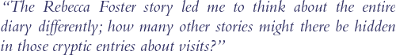

| Conclusion | |
|
|
 |
| --Laurel Thatcher Ulrich | |
|
So what do you think? Do you think Judge North was guilty or innocent? What are we
able to see when we look back into the past? . . . and why? It is worth pausing to think about the way sources shape our understanding of the past. Different kinds of details are recorded by different people, depending upon their mood, their personalities, and the reasons they are keeping their records. Some sources are more likely to survive than others. The same event can look dramatically different when reconstructed from different sources. In the case of the conflict over Reverend Isaac Foster and the rape of his wife Rebecca Foster, we have a fairly complete set of town records. We have the terse diary of the man who wanted to oust the minister. And we have some court records. We can find out quite a bit about the ousting of the minister. But the evidence of the rape trial is very thin. We also have Martha's account. Her diary gives us a different perspective on the controversy over Isaac Foster. Her diary also gives us the only surviving testimony about the rape of Rebecca Foster. But it is important to remember that Martha Ballard normally did not include this kind of detail. If Rebecca Foster had not taken her case to court, Martha would never have written down all she knew about Rebecca's story. We would only have Martha's totally opaque, terse entries about being "at mrs fosters" on the days Rebecca confided in her. Nothing more. "No source. No history," the old saying goes. And it's true. We piece together our stories about the past from the fragments that survive. There's another old saying, "History is written by the winners." What do you think? Are the records of those in power more likely to survive? What is required to piece together the stories of those who were not in power . . . or those who were on the "losing" side of conflicts in the past?
Would you like to see and read what other people have concluded from the same documents you've just read? How does the medium affect the story that gets told? You can read what historian Laurel Thatcher Ulrich wrote in chapter three of her book A Midwife's Tale. You can also watch the scene from the film A Midwife's Tale dealing with the religious controversy and the rape (QuickTime, 5 minutes, 27.6MB).
If you want to read more about religious upheavals and the role of women after the American Revolution, see the bibliographies for further reading on: The
Lives of Women in America During and After the Revolution
|
|
||||||||||||||||||